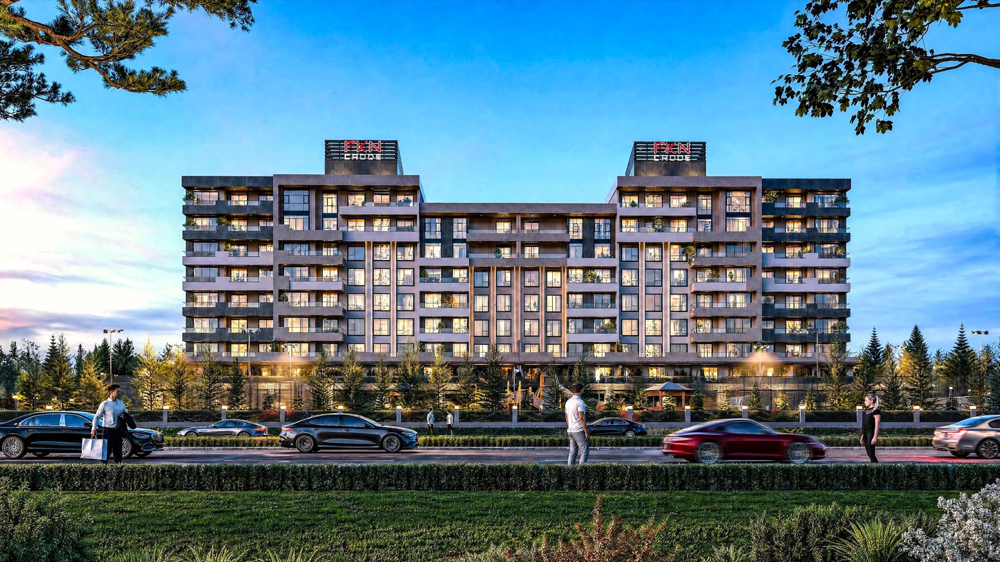
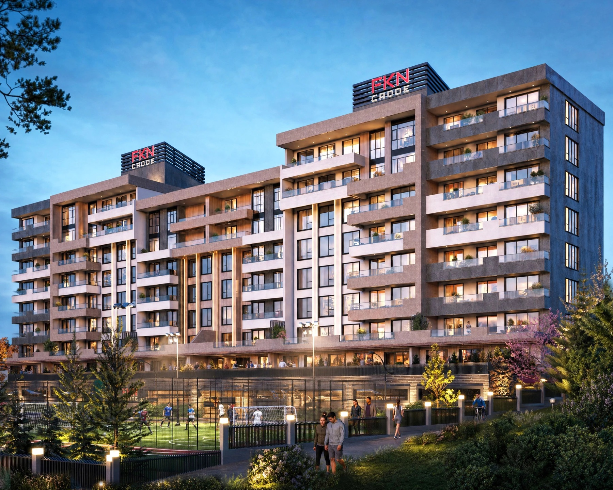

Yapracık, Ankara

FKN İnşaat presents FKN Cadde in Ankara, Yapracık, with apartment choices from 2+1 to 5+1. The official view shows two FKN CADDE roof signs.
Selected original views from the developer’s project gallery.

Satışta; construction stage and handover date are not confirmed by the developer. Source checked 12 October 2026; availability and dates require developer confirmation.
This example is not accepting enquiries. A commissioned presentation includes the contact details and enquiry links you approve.